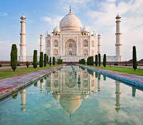
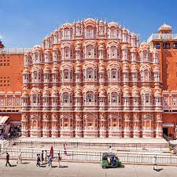
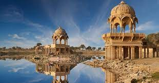

| Destination | Details |
|---|
Statue Of Unity | The Statue of Unity is a statue of Indian statesman and independence activist Vallabhbhai Patel, who was the first deputy prime minister and home minister of independent India and an adherent of Mahatma Gandhi. |
| Taj Mahal | The Taj Mahal 'Crown of the Palace' is an ivory-white marble mausoleum on the right bank of the river Yamuna in the Indian city of Agra. It was commissioned in 1632 by the Mughal emperor Shah Jahan to house the tomb of his favourite wife, Mumtaz Mahal; it also houses the tomb of Shah Jahan himself. It is designated as UNESCO World Heritage Site.
|
| Jaipur  | Jaipur is the capital of India’s Rajasthan state. It evokes the royal family that once ruled the region and that, in 1727, founded what is now called the Old City, or “Pink City” for its trademark building color. At the center of its stately street grid (notable in India) stands the opulent, colonnaded City Palace complex. With gardens, courtyards and museums, part of it is still a royal residence |
| Jaislmer | The Statue of Unity is a statue of Indian statesman and independence activist Vallabhbhai Patel, who was the first deputy prime minister and home minister of independent India and an adherent of Mahatma Gandhi. |